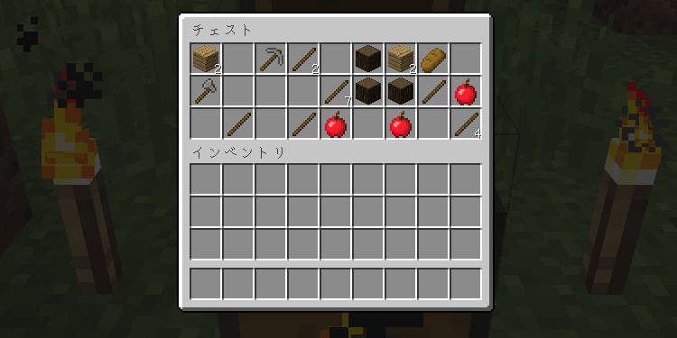
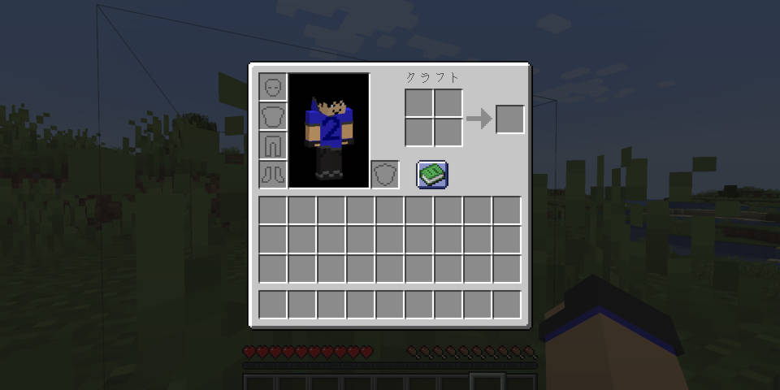
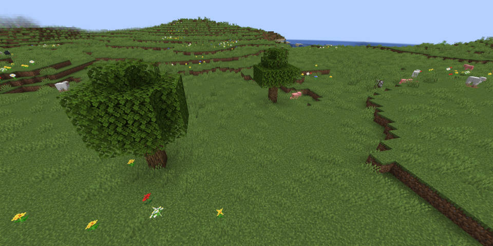
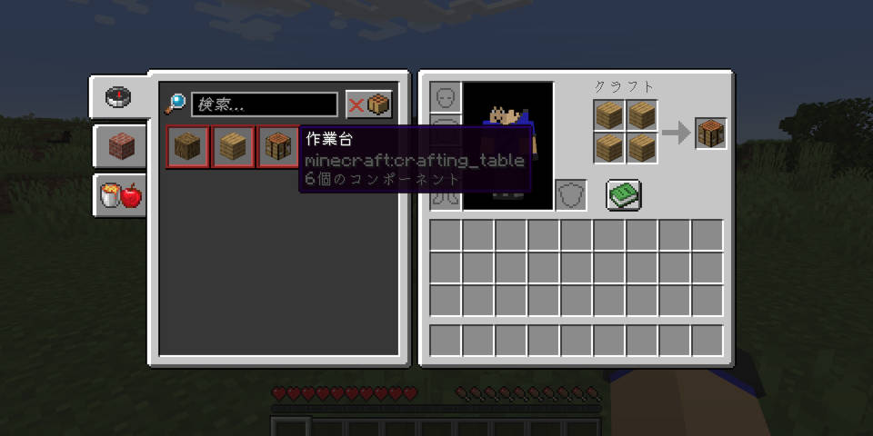
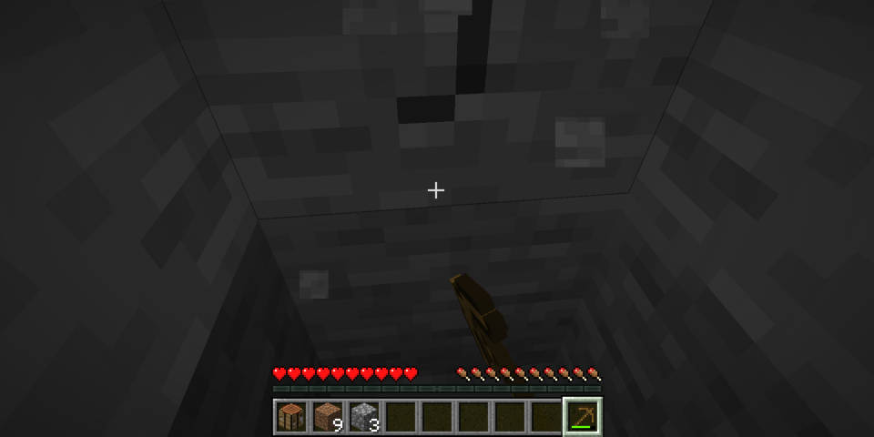
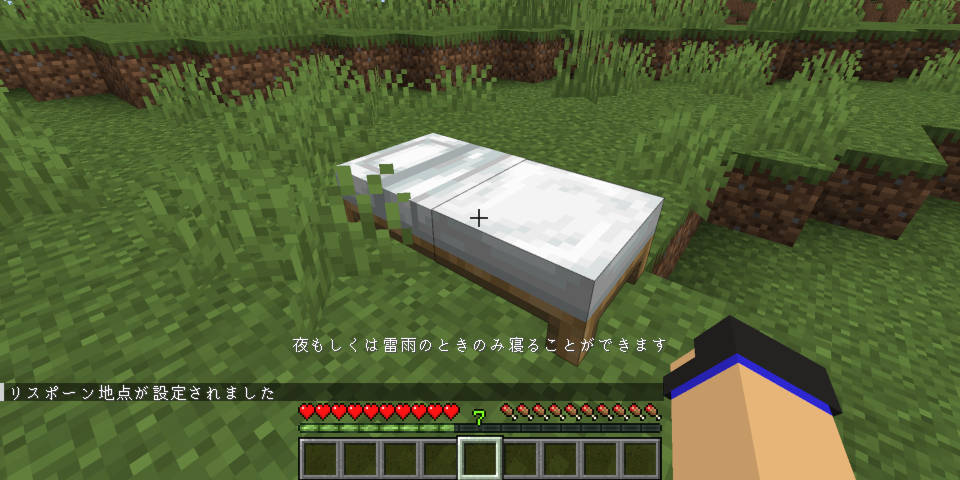
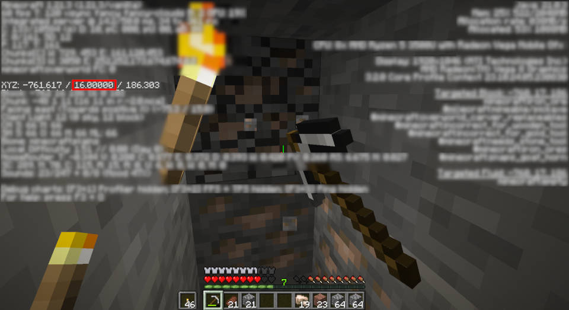
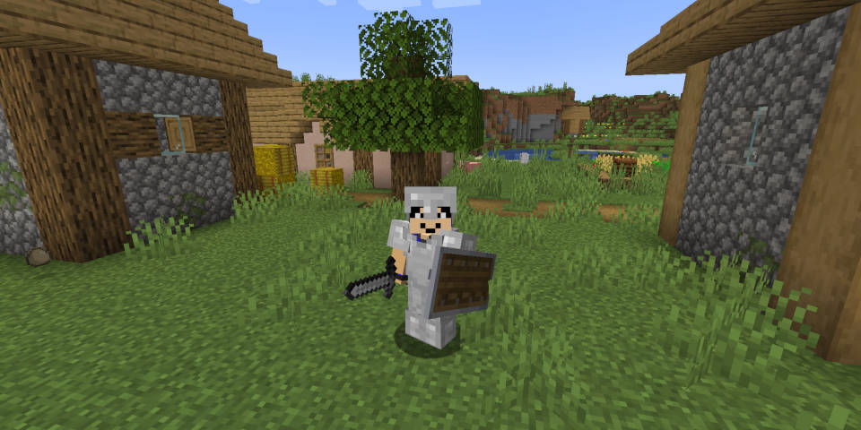

序盤の進め方
このページでは、初心者向けに、ワールド作成からマイクラの序盤の基本を紹介し、鉱石を入手し、道具をそろえるまでの手順を紹介します
ワールド作成について
まず、初めての方は、「シングルプレイ」で、「ワールド作成」をクリックし、ゲーム設定で、ゲームモードをサバイバルにし、難易度をピースフル（ピース）に設定するのがおすすめです。ピースフルとは、敵モブがスポーン（出現）せず、ダメージを受けても自動回復します。イージーからハードの難易度は敵モブがスポーンしますが、敵の強さが変わってきます。プレイ中でも難易度は変えられるので安心して変えてください。「ボーナスチェスト」をオンにすることもおすすめです。「ボーナスチェストには」木の道具と石の道具が1つずつ、木や食料が入っているはずです。
ボーナスチェストの中身の例↑
最初にすると良いこと
1.最初のスポーン地点に印をつけると良いと思います。リスポーン（復活）地点は「ベッド」に設定できて、「ベッド」が無いと、ゲームオーバーになった場合、最初にスポーンした所に戻って来てしまいます。ベットには羊の羊毛と木材が必要です。村という家が建っているところに行くとベットを奪えます。この後序盤の進め方で説明します。
2.草原の所にスポーンしたらいいですが、木がないバイオーム（環境、地形）にスポーンしていたら、歩いたり走ったりして木が生えている所に行きましょう。（草原に出れるといいです）草原がない場合、ワールドを作り直すのがおすすめです。
序盤のおすすめ手順
1.まずは木をきりましょう
2.「E」キーでインベントリを表示し、緑色の本のマークをおしてレシピを表示させられます
3.木をきったら作業台を作りましょう。左のレシピで作りたいアイテムをクリックして、作り方を表示させれます。材料を新しく得ると、レシピが増えます。
4.作業台を作ったら、右クリックして開きましょう。木で棒をつくり、木のつるはしを作りましょう。レシピを見てください。※1
※1手で石をほっても石をゲットできないので木のつるはしを作ります。 斧やシャベル、クワなどは石や鉄以上の鉱石などで作ったほうがいいので作らないほうがいいです。
5.次は石を掘ります。土ブロックや草ブロックを下に掘ったりすると、石が出てきます。石をほると、丸石になってゲットできます。
洞窟で石をほっても良いです。しかし、イージー以上の場合、暗い所には敵モブがスポーンするので、剣や斧などをもって行きましょう。洞窟なら石炭や鉄、銅、金、ダイヤなどの鉱石が得られるかもしれません。
6.丸石をゲットしたら、作業台を開き、石の道具をそろえましょう。
7.次はベッドを作ります。羊の羊毛3つと木材も3つ必要です。作業台で作ります。羊毛は、鉄のインゴット二つでハサミを作ると、ハサミで羊を右クリックして羊毛がゲットできますが、羊を倒してもゲットできます。羊毛を3つ集めたら、作業台のレシピを見たりして、作ってみてください。
作ったら、ベッドを右クリックしてください。そうすると、そのベッドが、リスポーンする場所になります。（リスポーンする場所とは、死んでしまったら、その場所に生きかえるということです。）
リスポーン地点を設定できたら、鉄を目指します。まず、洞窟を探しましょう。もしくは、村を探しましょう。洞窟のモンスターは、少し強いので、初心者は、村のほうがいいと思います。村も洞窟も見つからない場合、ブランチマイニングというのをするのがおすすめです。ブランチマイニングとは、難しいことではありません。まず、座標を見てください。「F3」キーを押して座標を表示させられます。鉄がたくさんとれる座標のY232かy16まで、地下に階段状に掘り進め、そのY232かy16の座標でで、まっすぐ地下を掘り進めるということです。すると鉄がたくさんとれます。
鉄を集めたら防具やツールをそろえましょう。これで序盤の進め方の紹介を終わります。
